냐오차오 (National Stadium)
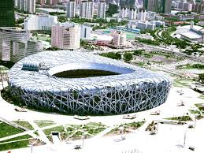
2008년 올림픽 주경기장으로 건립된 10만 석 규모의 건축물입니다. 새 둥지를 닮은 독특한 외관이 특징이며, 현재도 대형 콘서트와 국제 행사가 열리는 문화 공간으로 활용되고 있습니다.
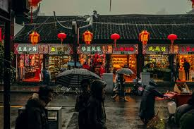
중국은 차(茶) 문화가 일상 깊숙이 자리 잡고 있습니다. 공원이나 사무실 등 어디서나 보온병에 찻잎을 우려 마시는 모습을 볼 수 있습니다. 또한 저녁마다 광장에 모여 단체로 춤을 추는 '광장무'는 중국 전역에서 볼 수 있는 독특한 일상 풍경입니다.
중국의 수도이자 역사와 현대가 공존하는 정치·문화의 중심지입니다. 고궁과 같은 역사적 유적지와 초현대적 스마트 시티의 면모를 동시에 갖추고 있습니다.

2008년 올림픽 주경기장으로 건립된 10만 석 규모의 건축물입니다. 새 둥지를 닮은 독특한 외관이 특징이며, 현재도 대형 콘서트와 국제 행사가 열리는 문화 공간으로 활용되고 있습니다.
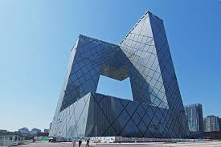
두 개의 타워가 공중에서 연결된 독특한 구조를 지닌 234m 높이의 빌딩입니다. 파격적인 외관으로 베이징 중심업무지구(CBD) 스카이라인의 상징적인 건물로 꼽힙니다.
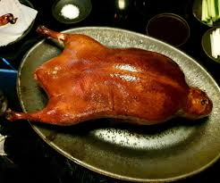
장작불에 구운 오리를 얇게 썰어 밀전병, 파채, 소스와 함께 싸 먹는 베이징의 대표 요리입니다. 현지인과 관광객 모두에게 인기 있는 보양식입니다.
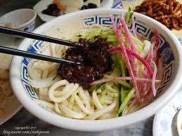
첨면장으로 볶은 돼지고기 소스를 수타면에 얹어 채소와 비벼 먹는 전통 면 요리입니다. 한국식 짜장면보다 단맛이 적고 짭조름하며 담백한 맛이 특징입니다.
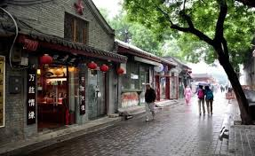
800년 역사의 옛 골목인 후통을 현대적인 문화 거리로 재탄생시킨 곳입니다. 개성 있는 상점과 카페가 밀집해 있어 베이징의 과거와 현재 구경을 동시에 할 수 있습니다.
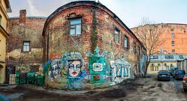
폐쇄된 군수 공장 지대를 리모델링한 대규모 예술 단지입니다. 다양한 갤러리와 설치 미술품이 전시되어 있어 중국의 현대 예술 트렌드를 확인하기 좋습니다.
중국 최대의 경제 도시입니다. 황푸강을 경계로 유럽풍의 근대 건축물과 초고층 빌딩이 마주 보는 화려한 스카이라인이 특징입니다.
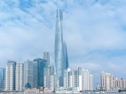
높이 632m의 중국 최고층 빌딩입니다. 나선형 외관이 독특하며, 전망대에서는 상하이 시내를 360도로 조망할 수 있습니다.
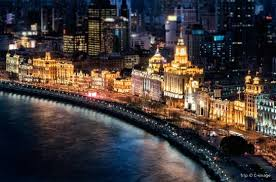
유럽풍 건축물들이 늘어선 황푸강 서쪽 지역입니다. 강 건너 푸둥 지구와 대비되는 야경이 유명하며, 유람선을 타고 감상하는 코스가 일반적입니다.
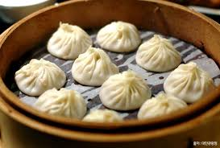
얇은 피 속에 진한 육즙이 가득 찬 상하이 대표 만두입니다. 숟가락에 올려 육즙을 먼저 맛본 뒤 나머지를 먹는 것이 정석입니다.
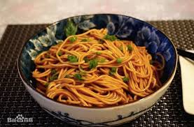
대파를 우려낸 기름에 간장을 섞어 면에 비벼 먹는 소박한 서민 면 요리입니다. 단순한 조합이지만 고소한 향이 특징입니다.
아시아 최대 규모의 테마파크입니다. '주토피아' 전용 테마존과 세계 최대 규모의 캐리비안 해적 어트랙션 등 차별화된 시설을 갖추고 있습니다.
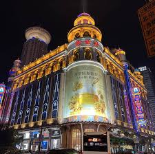
상하이 최대의 번화가이자 쇼핑 거리입니다. 인민광장에서 와이탄까지 이어지는 이 구역은 도시의 활기를 가장 잘 느낄 수 있는 명소입니다.
쓰촨성의 성도이자 판다의 고향입니다. 매콤한 쓰촨 음식과 여유로운 찻집 문화가 발달한 매력적인 도시입니다.
세계 최대 규모의 판다 전문 연구 및 사육 시설입니다. 자연 친화적인 환경에서 서식하는 판다의 일상을 가까이서 관찰할 수 있습니다.
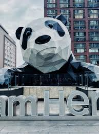
시내 중심가 백화점 외벽에 매달린 거대한 판다 조형물입니다. 청두 도심의 상징적인 촬영 명소로 자리 잡았습니다.
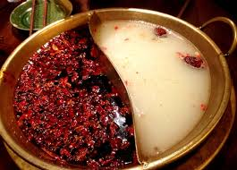
마라 향신료가 들어간 맵고 얼얼한 육수에 각종 재료를 익혀 먹는 요리입니다. 개인의 취향에 따라 맑은 육수와 나누어진 원앙솥으로도 즐길 수 있습니다.
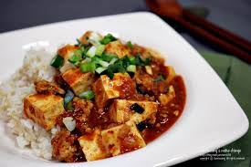
두반장과 산초를 사용해 맵고 얼얼하게 끓인 두부 요리입니다. 청두에는 19세기부터 시작된 원조 마파두부 식당이 운영되고 있습니다.
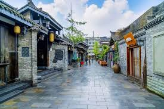
청나라 시대의 골목을 재현한 문화 거리입니다. 전통 기념품점, 찻집, 변검 공연 등을 한곳에서 체험할 수 있습니다.
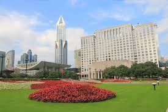
청두 특유의 느긋한 일상을 경험하기 좋은 장소입니다. 야외 찻집에서 차를 마시며 여유로운 한때를 즐길 수 있습니다.